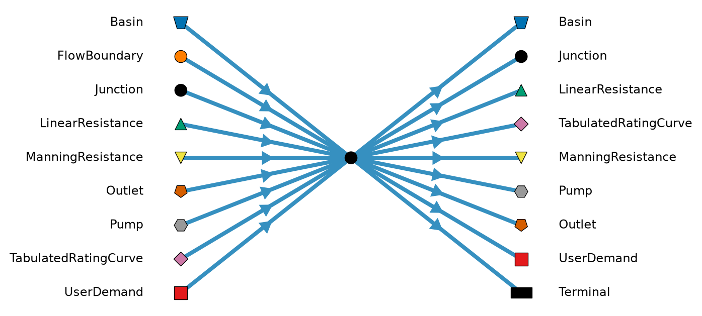

Code
%run ../../../utils/plot_node_connectivity.py
fig = plot_node_connectivity("Junction")
plt.show()
plt.close(fig)
A Junction node allows explicitly representing confluences and bifurcations in the network. It has no storage, so the sum of its inflows is always equal to the sum of its outflows, and it does not need any profile information.
A Junction can supply a UserDemand, as long as (i) the return flow of the UserDemand does not create a cycle of Junctions with the UserDemand, and (ii) the Junction has at least one other outflow link to pass on the remainder of its inflow.
Except for the UserDemand abstraction, a Junction that is not in the Static table does not introduce new behavior, it makes the network layout recognizable: the flow goes where the links go, as if the nodes around the Junction were connected directly. See Junctions not in the Static table for examples.
A Junction that is in the Static table divides the flow it receives over its outflow links by the fractions in that table. A UserDemand that abstracts from the Junction receives its flow before the remainder is divided. The flow over each of its links is in the flow results. Such Junctions can be combined into larger networks, see Junctions in the Static table.
Flow cannot be divided directly by other nodes: a connector node (e.g. Pump or Outlet), FlowBoundary or UserDemand has a single outflow link. To divide such flow, put a Junction that is in the Static table downstream of it.
The diagram below shows which node types are allowed directly upstream (left) and downstream (right) of this node. This is a connectivity illustration, not a valid simulation model.
%run ../../../utils/plot_node_connectivity.py
fig = plot_node_connectivity("Junction")
plt.show()
plt.close(fig)
This table is optional. A Junction that isn’t in the table only connects its neighbors, see Equations. A Junction that is in the table divides the flow it receives.
The fractions are defined per link from the Junction node_id to the node to_node_id. All outflow links of the Junction have a fraction, except the link to a UserDemand node, which gets the abstraction instead. A single outflow link gets the whole flow, so a row with a fraction of 1 or no fraction is enough for a Junction with one outflow, for instance to supply a UserDemand from it.
The to_node_id can be a Junction that isn’t in the table. The row then applies to the node that Junction passes the flow on to, or to the Basin of its group. Such a Junction cannot divide the flow it receives from a Junction in the table, since nothing says how: add it to the table as well, or name the nodes downstream of it directly.
%run ../../gen_docs_table.py
table_from_schema("Junction.Static", restrictions = {"to_node_id": "Must be a node directly downstream of `node_id` that is not a UserDemand node", "fraction": "Must be in [0,1]. The fractions of the outflow links of a node must sum to 1, where at most one may be unspecified and gets the remainder."})Detected IPython. Loading juliacall extension. See https://juliapy.github.io/PythonCall.jl/stable/compat/#IPython| column | type | optional | restriction |
|---|---|---|---|
| node_id | Int32 | x | - |
| to_node_id | Int32 | x | Must be a node directly downstream of node_id that is not a UserDemand node |
| fraction | Float64 | ✓ | Must be in [0,1]. The fractions of the outflow links of a node must sum to 1, where at most one may be unspecified and gets the remainder. |
Junctions connect all upstream nodes with all downstream nodes, and are not used in the equations themselves. For example, this model with diverging and converging Junctions
flowchart LR
classDef junction fill:#000,stroke:#000,color:white
A[\Basin/] --> E((Junction))
E --> B{{Connector}}
E --> C{{Connector}}
B --> F[\Basin/]
C --> G[\Basin/]
F --> H{{Connector}}
G --> I{{Connector}}
H --> J((Junction))
I --> J
J --> K[\Basin/]
class E,J junction
translates to the following model:
flowchart LR
A[\Basin/] --> B{{Connector}}
A --> C{{Connector}}
B --> F[\Basin/]
C --> G[\Basin/]
F --> H{{Connector}}
G --> I{{Connector}}
H --> K[\Basin/]
I --> K
And this model with chained Junctions
flowchart LR
classDef junction fill:#000,stroke:#000,color:white
A{{Connector}} --> D((Junction))
B{{Connector}} --> D
C{{Connector}} --> E((Junction))
D --> E
E --> F[\Basin/]
class D,E junction
translates to the following model:
flowchart LR
A{{Connector}} --> F[\Basin/]
B{{Connector}} --> F
C{{Connector}} --> F
A group of connected Junctions must form a tree: also when ignoring the direction of the links, the Junctions cannot form a cycle. So flow that is split by these Junctions cannot be joined again by them. A confluence Junction followed by a bifurcation Junction is generally invalid as well, as it connects a connector node with multiple Basins downstream, while a connector node has a single outflow link.
A group of connected Junctions with exactly one Basin as a neighbor connects that Basin in both directions. Then inflows and outflows of the Basin along the same waterway can share one Junction tree,
flowchart LR
classDef junction fill:#000,stroke:#000,color:white
B[\Basin/] --- J1((Junction))
J1 --- J2((Junction))
A{{Connector A}} --> J1
J1 --> C{{Connector C}}
E{{Connector E}} --> J2
J2 --> D{{Connector D}}
class J1,J2 junction
which translates to the following model:
flowchart LR
A{{Connector A}} --> B[\Basin/]
E{{Connector E}} --> B
B --> C{{Connector C}}
B --> D{{Connector D}}
The links of A, C, D and E keep their direction, now to or from the Basin. The links between the Junctions, and between the Junctions and the Basin, are drawn without arrows here since their direction does not matter. The rules for such a group are:
The flow over a link in the tree, such as the link between the two Junctions above, is the sum of the flows of the nodes on the side of the link away from the Basin. Flows in the direction of the link count as positive and flows against it as negative, so the link reports the net flow through that part of the waterway. In the example above, if the link between the Junctions points towards the Basin, it reports the flow of E minus the flow of D. To get the inflows and outflows separately, use separate Junction trees, which do not connect to each other:
flowchart LR
classDef junction fill:#000,stroke:#000,color:white
A{{Connector A}} --> J1((Junction))
E{{Connector E}} --> J2((Junction))
J2 --> J1
J1 --> B[\Basin/]
B --> J3((Junction))
J3 --> C{{Connector C}}
J3 --> J4((Junction))
J4 --> D{{Connector D}}
class J1,J2,J3,J4 junction
This translates to the same model.
The flow rate of a Junction in such a tree is the net flow on its link towards the Basin, see Flow rate.
In this example Junction J1 divides the flow of the Pump: 30% goes to Basin A and the remainder to Junction J2, which supplies the UserDemand first and passes the remainder on to Basin B.
flowchart LR
classDef junction fill:#000,stroke:#000,color:white
P{{Pump}} --> J1
subgraph S [Junction subgraph]
J1((J1)) -->|remainder| J2((J2))
J2 --> U[/UserDemand\]
end
J1 -->|0.3| A[\Basin A/]
J2 -->|remainder| B[\Basin B/]
U --> B
class J1,J2 junction
style S fill:none,stroke:#888,stroke-dasharray:5 5,color:#333
| node_id | to_node_id | fraction |
|---|---|---|
| J1 | A | 0.3 |
| J1 | J2 | |
| J2 | B |
Junction J1 and J2, and the UserDemand that abstracts from J2, form a Junction subgraph, over which flow travels instantaneously. The inflow of a subgraph comes from nodes which determine their own flow: a Pump, Outlet, TabulatedRatingCurve, FlowBoundary or a UserDemand outside the subgraph. Multiple nodes can flow into the same Junction (a confluence), in which case the inflows are summed. A subgraph can be any network of Junctions, as long as there are no loops when following the direction of the links: splitting the flow and joining it again in a Junction downstream is allowed.
The flows in a subgraph are computed as follows:
Without allocation, a UserDemand abstracting from a Junction takes its demand before anything is passed on, regardless of its demand_priority: in a chain of Junctions the upstream UserDemand is served first. Demand priorities are only applied by allocation, which bounds the abstraction of each UserDemand by what it allocated.
A model does not need a Basin when all flow comes from FlowBoundary nodes and passes through Junctions, for instance into UserDemand or Terminal nodes.
A Junction has no level of its own. A structure that flows into a Junction sees the level of the single Basin or LevelBoundary downstream of it, if the Junction, and the Junctions downstream of it, do not divide the flow: then the structure behaves as if it flowed into that node directly, so a Pump or Outlet can still be drowned by max_downstream_level. This holds whether or not the Junction is in the Static table. Where the flow is divided over several nodes there is no single level, and the structure has free outflow: max_downstream_level and the downstream level reduction of a TabulatedRatingCurve are not applied. In the example above the Pump has free outflow, since J1 divides the flow over Basin A and Basin B.
With experimental.concentration the tracers are propagated through the subgraphs using the mass over the timestep rather than concentrations, so that no mass is lost when a flow is zero:
In the offline Delwaq coupling a Junction has no volume, so it is removed from the Delwaq network like the connector nodes: each node that flows into the Junction gets an exchange with each node it flows into. The flow over such an exchange is the flow of the link into the Junction times the share of the outflow link in the total outflow, per timestep, so the mixing in the Junction is the same as in the tracers of the core. An exchange between two boundary nodes, like a FlowBoundary and the UserDemand that abstracts from the Junction, is dropped, since it does not touch a Basin.
Control nodes can listen to the flow_rate of a Junction, and QGIS plots it. There are two rules:
Both rules give the same value as long as the water flows along the links, for instance at a confluence or a bifurcation.
Allocation can give it less water than the inflows into the Junction, to leave water for demands downstream with an higher priority.
A Junction that is in the Static table divides the flow over its outflow links by the same fractions as in the simulation. Allocation cannot change these fractions; it can only change how much water flows into the Junction, for instance by steering an allocation-controlled Pump or Outlet upstream.
A UserDemand that abstracts from a Junction gets an allocated flow rate per demand priority, like a UserDemand that abstracts from a Basin. Allocation can give it less than flows into the Junction, to leave water for demands downstream with an earlier priority. The remainder of the flow is divided over the other outflow links.
Such a Junction must have the same subnetwork ID as the nodes it is connected to: Junctions at the boundary between the primary network and a subnetwork, or between subnetworks, are not supported yet.
A Junction in the Static table has some specific connectivity rules: